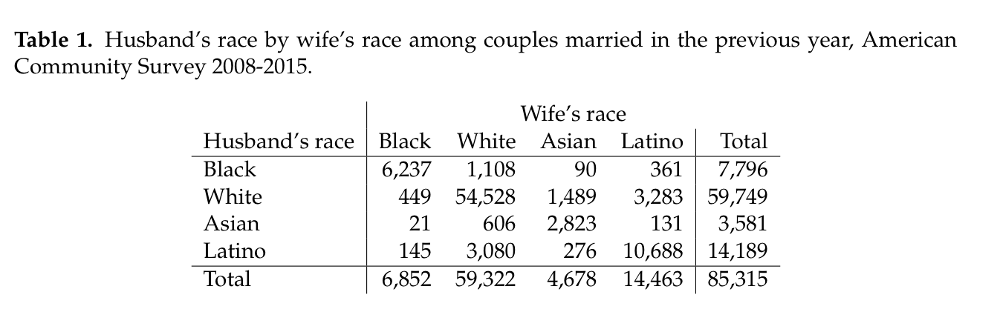

For most of my career, I have been pretty old-school in my use of open source tools. Not vi old-school, mind you, but still old school. I primarily used the venerable emacs editor to both write R code and to write papers in LaTeX. Although I have experimented a bit with Sweave, I generally just manually constructed my tables in LaTeX after I was satisfied with the analysis and produced my figures as EPS files for inclusion in LaTeX at runtime. Over the years, I have accumulated a substantial amount of code that goes into my LaTeX preamble that makes it come out just so and also allows me to adjust it to the often silly and idiosyncratic demands of journals for manuscript preparation. Then, when I get an acceptance, I often have to figure out how to manually convert my nice LaTeX pdfs into an awful Word document, because sociology journals. This is never a fun experience but the benefits of using LaTeX seemed to outweigh it.
Recently, I decided to make the switch to RStudio for my analysis and began to explore the possibilities of using Markdown and R Markdown to write papers. The promise was tantalizing. R Markdown offered a very simple mark-up system for writing papers that would let me lose all the baggage and complication of LaTeX and yet I could still produce documents of the same quality. I would be able to focus on content instead of complex mark-up. Furthermore, I could integrate R code directly into my document, thus automating the process of producing tables and figures. In fact, it seemed possible to fully integrate manuscript preparation with the analysis itself, which would create a much more streamlined research process. For me, the most exciting prospect of R Markdown is that I could produce word documents from it just as easily as PDF documents, and thus I could write once and then send out the formatted document to journals in the format of their choice with the click of a button. I was sold and decided to give it a try.
Same Old Problems, sort of
After many months of experimentation, I can report that while I am impressed by the possibilities of Markdown for writing academic papers, it also still falls somewhat short of the promise that I had for it. By definition, Markdown is designed to offer a minimal set of mark-up options, but the cost of this simplicity is that it can be difficult to get it to do what someone might expect of an academic publication. The answers to these problems typically involve a visit to some StackExchange forum and then fiddling around with latex templates, CSS files, and the like. So, in some sense, I am back in that world of LaTeX where I am trying to figure out how to get my sideways table with multicolumn support and decimal alignment right there, dammit! Nonetheless, I still see a lot of merit in the approach of R Markdown and I intend to continue using it for my manuscripts. After doing some fiddling around, I feel that I have a structure now that works pretty well. I wanted to share what I feel its current shortcomings are and how I have worked around them.
Integrating tables and figures
Integrating tables into R Markdown can be a frustrating experience. The syntax for tables in Markdown is very basic and so it is difficult to produce the kinds of tables that I would want in an academic publication. Packages like pander and knitr can help in making markdown tables, but can’t overcome the basic problem. For example, multicolumn support is not possible in Markdown. I was working on a paper about interracial marriage in which I wanted to show a cross-tabulation of husband’s race and wife’s race. Here is the best I was able to produce with the knitr::kable function:

This is a decent looking table, but its impossible to tell at a glance which spouse is on the column and which spouse is on the row. Furthermore, I would have liked a line that separated the column and row marginal totals.
I can produce a table more to my liking by using the xtable package in R. With some custom work, I am able to produce the following table:

In order to do this, I had to use the LaTeX \multicolumn tag to get “Wife’s race” to display properly over the column headers. R packages like xtable and stargazer provide excellent tools for producing nice tables in LaTeX like this one. Such tables can be integrated easily into R Markdown documents by using the results='asis' option, but the resulting document can then only be compiled as a tex or PDF document, which obviates one of the primary reasons for adopting Markdown in the first place.
Figures are less problematic, but I have run into a problem that of figures with horrible resoluation when I produce a Word document from a Markdown document. There might be a way around this from within the R Markdown options, but I have not been able to get it working yet.
Adjusting for journal requirements
Journals typically want manuscripts to be double-spaced. Many journals also want the notes to come at the end in a separate section rather than as footnotes. Most journals want the tables and figures to come at the end of the manuscript, after the references. Its not often a technical requirement, but I also usually don’t send in my manuscripts with justified text, even though it looks nicer. Markdown is not very flexible about making these kinds of adjustments. You can employ LaTeX headers to do it, but then you can only produce your document in LaTeX and if you have to put all this stuff in your document, the benefits of moving from LaTeX to Markdown diminish significantly.
Integrating analysis and manuscript preparation
In the analysis stage, many of the initial figures and tables will be exploratory and it is not worth my time to polish them up with the best labeling and captioning since I may end up moving onto something better in the end. So, in practice, I have ended up cutting and pasting code from my analysis into the R Markdown document and then polishing it up for final presentation. This is still a very useful feature but not as completely seamless as I had originally hoped.
Additionally, some analyses can take substantial amounts of time to run and you don’t want this added processing time every time you knit your document after editing a paragraph of text. For example, I am working on a project now that involves millions of observations, complicated models that are computationally intensive to fit, and multiple imputation. As a result, it takes about five hours to go from raw data to final models. So, in practice, I save my final model summaries as RData objects and then load those objects into my R Markdown to produce tables and figures.
My Solution
The beginning of my solution came from the LaTeX template for R Markdown articles developed by Steven V. Miller. I made some additions and edits to this template for my own purposes, but the template I am using is largely based on his efforts. The latest version of my template is available on GitHub, along with some other tools for compiling the manuscript.
My biggest decision was to separate the main body of my article and the tables and figures into separate R Markdown documents that produce separate PDFs. These separate documents are then concatenated together using pdftk after they are converted to PDF documents. One important addition I made to the template is the ability in the YAML headers to provide a different starting pagination for a document. This allows all of the pagination to match when you combine the final manuscript together from its parts.
I made the decision to keep these documents separate for several reasons. First, many journals require that tables and figures come at the very end after references and I could not figure out how to make this happen in a single document when using a bib file to generate references. Second, this allows me when necessary to easily produce a Word document of the main text of the mansucript and then to separately fiddle around with the tables and figures to get them to work in Word. References will be correct in the Word document and it also seems to do a pretty decent job of converting LaTeX equations. Third, keeping tables and figures separate also makes sensitivity analyses easier. I can make a few changes to the coding procedures (or whatever), rerun the analysis and then save my PDF of the tables and figures under a separate name to preserve my sensitivity analysis for easy comparison.
There are several other options that can be specified in the YAML header. You can see examples of most of these in the starter R Markdown documents on GitHub and the template itself describes them in detail. I added an endnote option that moves footnotes to the end of the paper. I also adjusted the anonymous option so that it produces double-spaced ragged right text.
Here is an example of what a full nicely formatted manuscript would look like under the default settings. The tables were produced with the stargazer package. Here is the same manuscript but with the anonymous option turned on.
This is still a work in progress and I am sure that I will probably fiddle with this a bit more as my current projects make their way through the publication process. However, I am hopeful that there won’t be too much more fiddling. Feel free to take this template and adjust it to your own purposes.